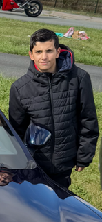

Qui suis‑je ?
Petite présentation personnelle pour mieux me connaître.

Moi, c’est Yann 👋
Je suis élève de 3ᵉ et j’ai réalisé mon stage d’observation chez TechMinds Alliance. J’aime l’informatique, la technologie et j’ai découvert beaucoup de choses pendant cette semaine.
Mes centres d’intérêt
- 🔧 L’informatique et les nouvelles technologies
- 🎮 Les jeux vidéo
- 📱 Les réseaux sociaux
- 🏀 Le sport
- 🎥 Les films et séries
Ce que j’ai préféré pendant le stage
- Créer mon propre site web
- Programmer un outil en Python
- Comprendre les bases de la cybersécurité
- Découvrir comment fonctionne un réseau informatique